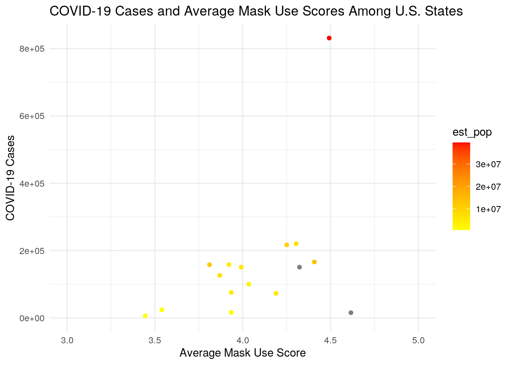
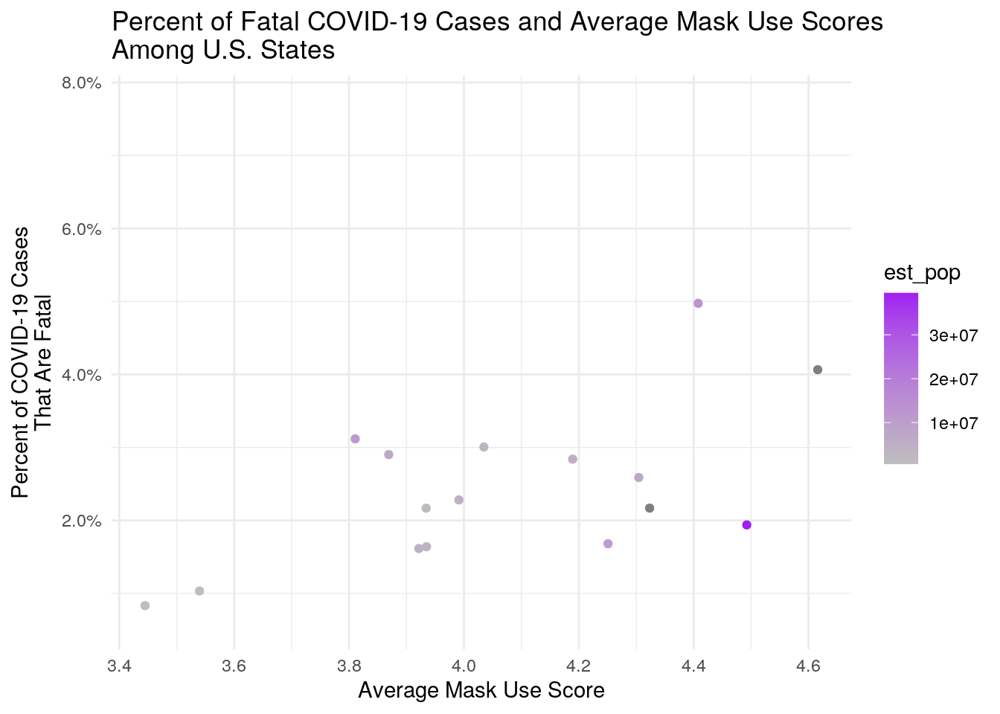
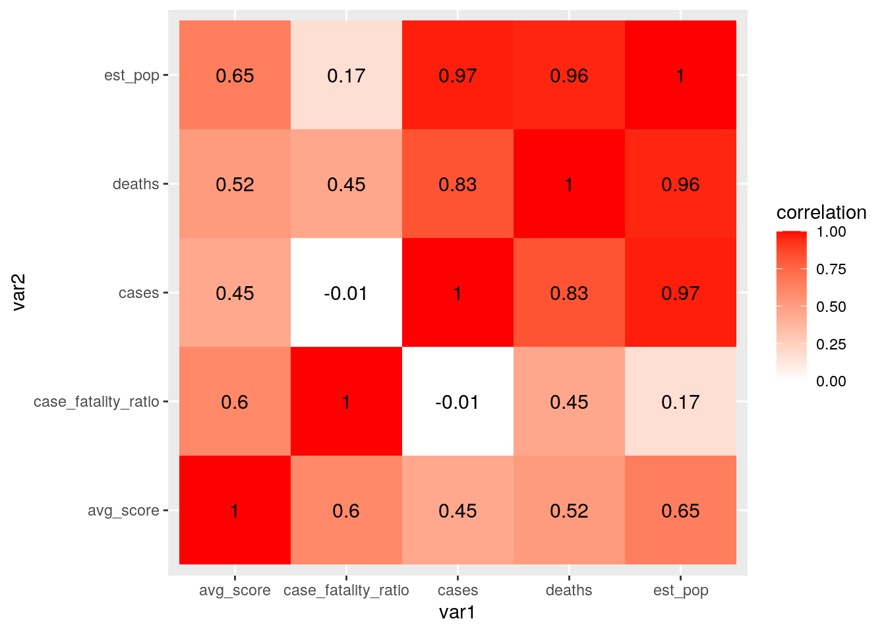
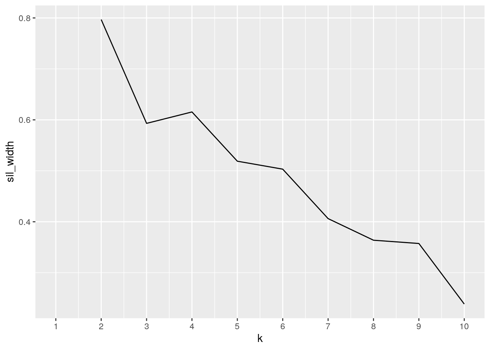
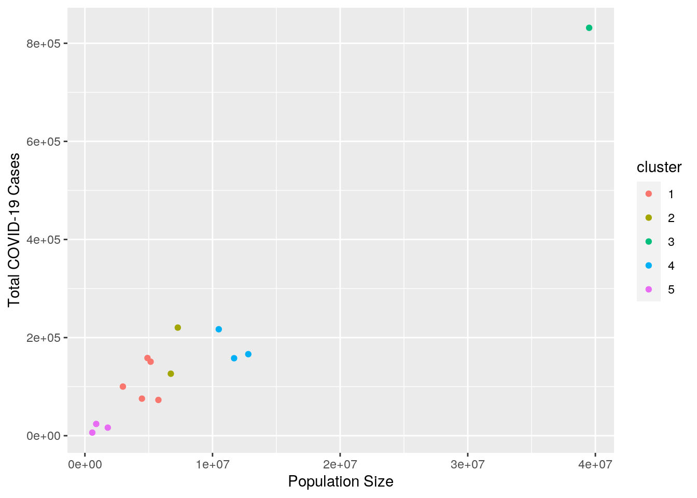

library(tidyverse)
us_counties <- read_csv("https://drive.google.com/uc?export=download&id=1klZ0xS5kgalMXxS0NMSw1JYZRNQfI9cW")
mask_usage <- read_csv("https://drive.google.com/uc?export=download&id=1PUvfxr4U5AxP03mfKYWnsogLtuPmtk0Q")
population_est <- read_csv("https://drive.google.com/uc?export=download&id=1aNqKCqw_JfTtsTw03MC8qK4L2TSvP5rm")COVID-19 has emerged at a unique time in our history in which even public health has become politicized. I chose to study the correlation between mask usage and COVID-19 outcomes in an attempt to understand how reduced mask use impacts the number of COVID-19 cases and deaths per U.S. county. The COVID-19 data was collected by the New York Times and includes the total number of cases and deaths as of October 4. The mask frequency survey was also published by the New York Times and was collected through online interviews by the survey firm Dynata in the month of July. Lastly, the population data was published by the U.S. Census Bureau and includes 2019 population estimates per county.
I expect population size to strongly correlate with the number of COVID-19 cases and deaths. I also predict that counties that have reported higher frequencies in mask use will have better health outcomes during this pandemic, with less people contracting the virus and, as a result, less fatalities.
mask_usage %>% pivot_longer(2:6, names_to = "mask_use", values_to = "frequency")## # A tibble: 15,710 x 3
## COUNTYFP mask_use frequency
## <chr> <chr> <dbl>
## 1 01001 NEVER 0.053
## 2 01001 RARELY 0.074
## 3 01001 SOMETIMES 0.134
## 4 01001 FREQUENTLY 0.295
## 5 01001 ALWAYS 0.444
## 6 01003 NEVER 0.083
## 7 01003 RARELY 0.059
## 8 01003 SOMETIMES 0.098
## 9 01003 FREQUENTLY 0.323
## 10 01003 ALWAYS 0.436
## # … with 15,700 more rowsmask_usage %>% pivot_longer(2:6, names_to = "mask_use", values_to = "frequency") %>%
pivot_wider(names_from = "mask_use", values_from = "frequency")## # A tibble: 3,142 x 6
## COUNTYFP NEVER RARELY SOMETIMES FREQUENTLY ALWAYS
## <chr> <dbl> <dbl> <dbl> <dbl> <dbl>
## 1 01001 0.053 0.074 0.134 0.295 0.444
## 2 01003 0.083 0.059 0.098 0.323 0.436
## 3 01005 0.067 0.121 0.12 0.201 0.491
## 4 01007 0.02 0.034 0.096 0.278 0.572
## 5 01009 0.053 0.114 0.18 0.194 0.459
## 6 01011 0.031 0.04 0.144 0.286 0.5
## 7 01013 0.102 0.053 0.257 0.137 0.451
## 8 01015 0.152 0.108 0.13 0.167 0.442
## 9 01017 0.117 0.037 0.15 0.136 0.56
## 10 01019 0.135 0.027 0.161 0.158 0.52
## # … with 3,132 more rowsThe data from all three sets is already tidy, with every variable having a distinct column. However, as shown above, when I pivot the mask use dataset longer, the mask frequency categories (rarely, sometimes, frequently and always) are put into one big column. Their values are then put into a separate column. However, this makes the data harder to analyze and much, much longer. Therefore, I pivoted the mask use dataset wider again, returning it to its original tidy format.
population_est <- population_est %>% as.data.frame() %>% mutate(county = str_replace(county,
".", "")) %>% mutate(county = str_replace(county, "County",
"")) %>% separate(county, into = c("county", "state"), sep = " , ") %>%
unite(county, state, col = "location")
# Joining the COVID data
covid_data_partial <- us_counties %>% full_join(mask_usage, by = c(fips = "COUNTYFP")) %>%
select(-1) %>% unite(county, state, col = "location")
# Joining the full dataset
covid_data_full <- covid_data_partial %>% full_join(population_est,
by = "location") %>% select(-(5:8))First, I had to alter the "county" variable in the population dataset (population_est) so that I could combine the three datasets by location. I combined county and state information into one variable simply because multiple states have counties with the same name. I then combined the county COVID-19 dataset (us_counties) with the mask frequency survey (mask_usage) using a full join in order to preserve the original data.
covid_data_full <- covid_data_full %>% mutate(score = 1 * NEVER +
2 * RARELY + 3 * SOMETIMES + 4 * FREQUENTLY + 5 * ALWAYS) %>%
select(-c("NEVER", "RARELY", "SOMETIMES", "FREQUENTLY", "ALWAYS")) %>%
separate(location, into = c("county", "state"), sep = "_") %>%
select(-fips) %>% mutate(case_fatality_ratio = ((deaths)/(cases)))
state_covid <- covid_data_full %>% group_by(state) %>% summarize(avg_score = mean(score),
sd_score = sd(score), est_pop = sum(est_pop), cases = (sum(cases)),
deaths = (sum(deaths)), case_fatality_ratio = (sum(deaths)/sum(cases)))
glimpse(state_covid)## Rows: 56
## Columns: 7
## $ state <chr> "Alabama", "Alaska", "Arizona", "Arkansas", "Cali…
## $ avg_score <dbl> 3.921522, NA, 4.304400, NA, 4.492431, 4.189328, N…
## $ sd_score <dbl> 0.2415388, NA, 0.2565571, NA, 0.2152504, 0.332368…
## $ est_pop <dbl> 4903185, NA, 7278717, NA, 39512223, 5758736, NA, …
## $ cases <dbl> 158380, 9111, 220403, 86525, 831494, 72929, 58297…
## $ deaths <dbl> 2558, 54, 5705, 1407, 16122, 2071, 4513, 645, 629…
## $ case_fatality_ratio <dbl> 0.016151029, 0.005926902, 0.025884403, 0.01626119…state_covid %>% summarize(`Correlation Between Mask Use and Case Fatality Ratio` = cor(avg_score,
case_fatality_ratio))## # A tibble: 1 x 1
## `Correlation Between Mask Use and Case Fatality Ratio`
## <dbl>
## 1 NAstate_covid %>% arrange(-est_pop)## # A tibble: 56 x 7
## state avg_score sd_score est_pop cases deaths case_fatality_ratio
## <chr> <dbl> <dbl> <dbl> <dbl> <dbl> <dbl>
## 1 California 4.49 0.215 39512223 831494 16122 0.0194
## 2 Texas NA NA 28995881 NA NA NA
## 3 Pennsylvania 4.41 0.235 12801989 166270 8271 0.0497
## 4 Ohio 3.81 0.297 11689100 157966 4925 0.0312
## 5 North Carolina 4.25 0.226 10488084 217049 3647 0.0168
## 6 Arizona 4.30 0.257 7278717 220403 5705 0.0259
## 7 Indiana 3.87 0.242 6732219 126414 3669 0.0290
## 8 Colorado 4.19 0.332 5758736 72929 2071 0.0284
## 9 South Carolina 3.99 0.251 5148714 150891 3442 0.0228
## 10 Alabama 3.92 0.242 4903185 158380 2558 0.0162
## # … with 46 more rowscovid_data_full %>% group_by(state) %>% summarize(avg_score = mean(score),
sd_score = sd(score), est_pop = sum(est_pop), cases_per_capita = (sum(cases)/1e+05),
deaths_per_capita = (sum(deaths)/1e+05)) %>% glimpse## Rows: 56
## Columns: 6
## $ state <chr> "Alabama", "Alaska", "Arizona", "Arkansas", "Califo…
## $ avg_score <dbl> 3.921522, NA, 4.304400, NA, 4.492431, 4.189328, NA,…
## $ sd_score <dbl> 0.2415388, NA, 0.2565571, NA, 0.2152504, 0.3323681,…
## $ est_pop <dbl> 4903185, NA, 7278717, NA, 39512223, 5758736, NA, NA…
## $ cases_per_capita <dbl> 1.58380, 0.09111, 2.20403, 0.86525, 8.31494, 0.7292…
## $ deaths_per_capita <dbl> 0.02558, 0.00054, 0.05705, 0.01407, 0.16122, 0.0207…texas_covid <- covid_data_full %>% filter(state == "Texas") %>%
arrange(-score)
glimpse(texas_covid)## Rows: 254
## Columns: 7
## $ county <chr> "Hays", "El Paso", "Hudspeth", "Atascosa", "Presi…
## $ state <chr> "Texas", "Texas", "Texas", "Texas", "Texas", "Tex…
## $ cases <dbl> 5951, 25206, 62, 1166, 97, 1063, 29750, 1501, 996…
## $ deaths <dbl> 66, 531, 3, 32, 7, 18, 429, 77, 40, 0, 35, 1329, …
## $ est_pop <dbl> 230191, 839238, 4886, 51153, 6704, 20837, 1273954…
## $ score <dbl> 4.815, 4.805, 4.763, 4.751, 4.746, 4.728, 4.710, …
## $ case_fatality_ratio <dbl> 0.01109057, 0.02106641, 0.04838710, 0.02744425, 0…First, I converted the mask use frequencies into a "mask use score" where counties with higher scores reported higher frequencies of mask usage. I also found the case fatality ratio in order to analyze the mortality rate among counties. I also grouped by state and found the total number of cases and deaths, as well as the average and standard deviation in mask use score for each state. In addition, I also found the correlation between average mask use scores and case fatality ratios across all of the states. Finally, I filtered the complete data set to make a dataset that only included Texas COVID-19 data and was surprised to see that Hays county has the highest mask use score out of all other Texas counties!
ggplot(state_covid, aes(avg_score, cases)) + geom_point(aes(color = est_pop)) +
scale_color_gradient(low = "yellow", high = "red") + ggtitle("COVID-19 Cases and Average Mask Use Scores Among U.S. States") +
xlab("Average Mask Use Score") + ylab("COVID-19 Cases") +
theme_minimal() + scale_x_continuous(lim = c(3, 5))
ggplot(state_covid, aes(avg_score, case_fatality_ratio)) + geom_point(aes(color = est_pop)) +
scale_color_gradient(low = "grey", high = "purple") + scale_fill_discrete(name = "Estimated\nPopulation") +
ggtitle("Percent of Fatal COVID-19 Cases and Average Mask Use Scores\nAmong U.S. States") +
xlab("Average Mask Use Score") + ylab("Percent of COVID-19 Cases\nThat Are Fatal") +
theme_minimal() + scale_y_continuous(labels = scales::percent)
cormat_state <- state_covid %>% select_if(is.numeric) %>% select(-sd_score) %>%
cor(use = "pair")
tidycor_state <- cormat_state %>% as.data.frame %>% rownames_to_column("var1") %>%
pivot_longer(-1, names_to = "var2", values_to = "correlation")
tidycor_state %>% ggplot(aes(var1, var2, fill = correlation)) +
geom_tile() + scale_fill_gradient2(low = "white", high = "red") +
geom_text(aes(label = round(correlation, 2)), color = "black",
size = 4) As predicted, there is a strong correlation between population size and COVID-19 cases. There is also a high correlation between population size and COVID-19 deaths. There was also a positive correlation between the case fatality ratio and average mask use score. This could simply be due to the fact that counties experiencing higher mortality rates from COVID-19 are more likely to use masks.
library(cluster)
library(GGally)
library(plotly)
pam_dat <- state_covid %>% na.omit() %>% select(-state)
sil_width <- vector()
for (i in 2:10) {
pam_fit <- pam(pam_dat, k = i)
sil_width[i] <- pam_fit$silinfo$avg.width
}
ggplot() + geom_line(aes(x = 1:10, y = sil_width)) + scale_x_continuous(name = "k",
breaks = 1:10)
pam1 <- pam_dat %>% pam(k = 5)
pamclust <- pam_dat %>% mutate(cluster = as.factor(pam1$clustering))
pamclust %>% ggplot(aes(x = est_pop, y = cases, color = cluster)) +
geom_point() + xlab("Population Size") + ylab("Total COVID-19 Cases") The data forms the clearest clusters when it is grouped in five clusters by total COVID-19 cases and population size. As depicted in the plot above, the amount of cases a state experiences is largely influenced by the size of that population. Therefore, states with similar population sizes tend to have a similar number of cases. California, Texas and Florida, which have population sizes that exceed 20,000,000 and were put into cluster 3, experienced a much higher number of cases compared to states in the other four clusters.
...